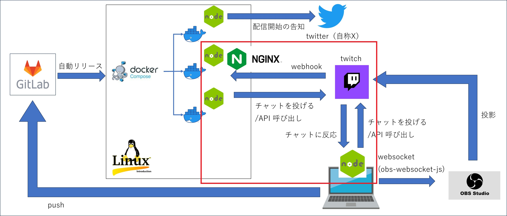
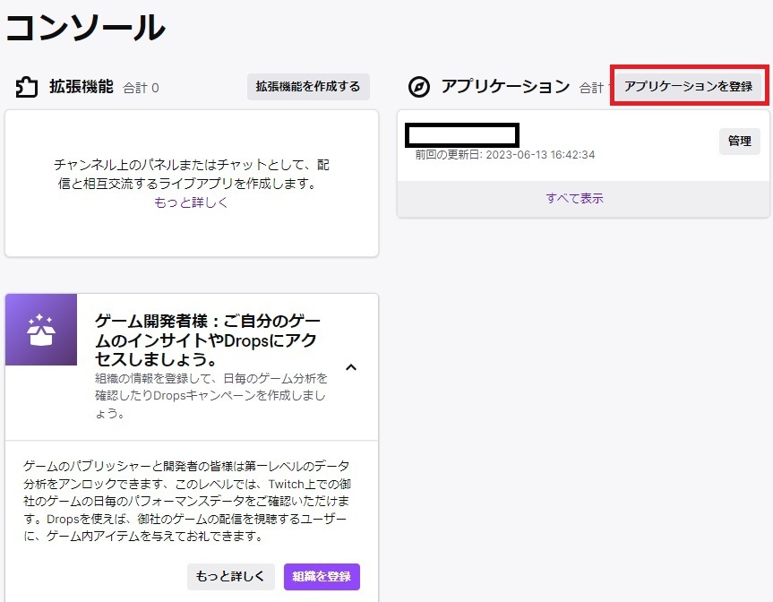
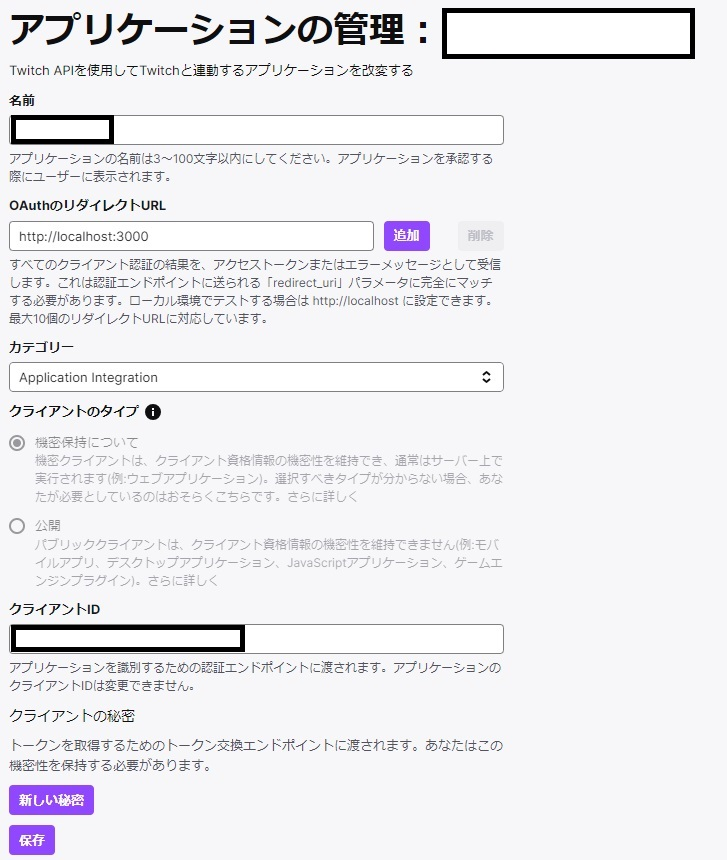

Node.js × Twitch
はじめに
このページは、 Node.js × Twitch, Twitter, OBS の続きです。
Twitch イベントを Webhook や tmi.js というライブラリを使用して Node.js で受け取ったり、チャットを投げたりする部分について記載します。以下画像の赤枠部分です。

その他の部分については、以下リンク先に別ページでまとめています。GitLab や Linux, Docker, nginx については記載していません。
アプリケーションの登録
Twitch の機能を使うためには、まず Twitch の developers サイトでアプリケーションを登録する必要があるのでその流れを記載します。
リンク先（Twitch developers）右上の「Log in with Twitch」ボタンから developers サイトにログイン。
ログイン後、右上の 「Your Console」 ボタンからコンソール画面に遷移して、「アプリケーションを登録」ボタンを押下。

アプリケーション登録画面でアプリケーション名、リダイレクトURL( http://localhost:3000 でOK)、カテゴリーを入力。
「新しい秘密」ボタンを押下すると秘密鍵が生成されます。
秘密鍵とクライアントIDを控えて「保存」ボタンを押下すると、アプリケーションの登録が完了です。

Twitch の認証
Twitch の Webhook や API を使うためには access token を取得する必要があります。access token には app access token と user access token の2種類があり、それぞれ用途は以下の通り。
-
App access tokens：ユーザー認証が不要な機能を利用する場合に使用する token。
-
User access tokens：ユーザー認証が必要な機能を利用する場合に使用する token。
access token についてはリンク先にまとまっている通り、4種類の token 取得方法があり、使用方法に応じて取得方法が変わります。
今回私が自作したアプリケーションにおいては、以下2つの方法で access token を取得しています。
- Client credentials grant flow：主に Webhook を受信する際に使用。App access token が発行される。
- Authorization code grant flow：主に API を発行する際に使用。User access token が発行される。
具体的にどうやって token を取得するかは Examples of the four flows に書いていますが、以下にも記載します。
Client credentials grant flow
Client credentials grant flow では App access token が発行され、Webhook を受信する際に使用します。
token 発行の手順としては、以下のような curl コマンドを発行します。
curl -X POST 'https://id.twitch.tv/oauth2/token' \
-H 'Content-Type: application/x-www-form-urlencoded' \
-d 'client_id=[clientID]&client_secret=[clientSecret]&grant_type=client_credentials'
- clientID：アプリケーションの登録で取得したクライアントID
- clientSecret：アプリケーションの登録で取得した秘密鍵
上記コマンドを実行すると、以下の形式でレスポンスが返ってきます。 access_token に記載されているのが App access token です。
{
"access_token":"[発行されたトークン]",
"expires_in":[有効期限],
"token_type":"bearer"
}
Authorization code grant flow
Authorization code grant flow では User access token が発行され、Twitch の API を発行する際に使用します。
token 発行の手順としては、以下のような形式の URL をブラウザに入力します。
https://id.twitch.tv/oauth2/authorize?response_type=code&client_id=[clientID]&redirect_uri=[redirectURL]&scope=[必要なスコープ]&state=[state]- clientID：アプリケーションの登録で取得したクライアントID
- redirectURL：アプリケーションの登録で設定したリダイレクトURL
- 必要なスコープ：リンク先を参考に必要なスコープを指定
- state：任意指定項目。CSRF対策なので、セキュリティ的には指定した方が安全。任意の文字列を指定。リンク先のサンプル では c3ab8aa609ea11e793ae92361f002671 という文字列が設定されている。
必要なスコープは、発行する API ごとに異なります。例えば、投票を開始する API を呼び出す場合、 Polls を見ると「The endpoint requires a user access token with scope channel:manage:polls」とあるので、必要なスコープは「channel:manage:polls」だということがわかります。
この場合、URLに指定するスコープは
channel%3Amanage%3Apolls+channel%3Aread%3Apolls
となります。ここで「%3A」は「:」のURLエンコードです。「+」で二つのスコープを連結しています。
これを踏まえ、URL全体としては以下のようになります。
https://id.twitch.tv/oauth2/authorize?response_type=code&client_id=[clientID]&redirect_uri=[redirectURL]&scope=channel%3Amanage%3Apolls+channel%3Aread%3Apolls&state=c3ab8aa609ea11e793ae92361f002671
上記をブラウザに入力すると、 redirect_uri に指定したURLにリダイレクトされます。リダイレクト先のURLに、以下のような形式で access_token が記載されています。これが User access token です。
[指定したリダイレクトURL]/#access_token=[発行されたトークン]&scope=[指定したスコープ]&token_type=bearerTwitch のユーザー
Twitch では、ユーザーを示す項目は大きく3種類あります。
API や Webhook を使う際に理解しておく必要があります。
- user_name/login_name：ログインするときのid。アカウントの設定画面では「ユーザー名」と訳されている。後から変更できる。
- display_name：チャット欄などに表示される名前。アカウントの設定画面では「表示名」と訳されている。後から変更できる。設定していないユーザーもいる。
- user_id：Twitch が裏で採番している一意なid。通常意識しない。変更不可。
呼び方は統一されていない気がしますが、項目としてはこの3つがあります。
display_name が設定されているユーザーの場合、チャットしたときの名前が「あああ(aaa)」と表示されます。この「あああ」が display_name で「aaa」が user_name です。
Twitch の API や Webhook を使用するときは user_name と user_id を結構使うので、この違いは把握しておきたい。
下記リンク先から user_name と user_id を相互に変換することができます。結構使うことはあるのでブックマークしておくと良いでしょう。
Convert Twitch Username to Channel ID
Node.js × tmi.js
tmi.js というライブラリを使うと、視聴者のチャットなど、様々なイベントに反応する処理を実装できます。 Node.js の EventEmitter のような仕組みでチャットをトリガーに処理を動かすことができます。
また、チャットを投げることもできます。
tmi.js についてはこちらも参照 github tmi.js 。
EventEmitter については非同期のイベント駆動型ランタイムを参照してください。
tmi.js はチャット以外にも様々なイベントを拾って処理を開始することができます。ここではそのすべてについては説明しません。イベントの全量は以下リンク先を参照して下さい。
github tmijs/docs
イベントの中には Webhook で拾えるものと被っているものが結構あります。
Webhook よりは tmi.js を使った方が（たぶん）早いので基本的に tmi.js を使えばいいと思いますが、raid は Webhook の方が使い勝手が良いと思います。
tmi.js の raid だと、 display_name を設定しているユーザーの場合、display_name のみが返され user_name を取得できないからです。display_name をキーに user_name を返してくれるAPI は（たぶん）ないので、結構困ります。
Webhook であれば user_name と display_name の両方を取得できます。
tmi.js を改造して両方取得するやり方を紹介しているブログ記事もありますが、外部ライブラリを改造するとバージョンアップの度に書き直す必要があったり、改造が原因で予期せぬ挙動をすることも考えられるのであまりお勧めできません。一応当該記事のリンクを張っておきます。
Zenn tmi.jsでRaidのユーザ名・表示名を別々に取得したい
以下は、誰かがチャットするたびに稼働する処理の例です。Message イベントをトリガーにしています。
事前に以下コマンドで tmi.js をインストールしている前提です。
npm i tmi.js
twitch_bot.js'use strict';
import tmi from 'tmi.js';
const opts = {
identity: {
username: 'user_name',
password: 'oauth:'+[access_token],
},
channels: [
[channel_name]
]
};
const twClientBot = new tmi.client(opts)
// チャットに反応
twClientBot.on('message', (channel, userstate, msg, self) => {
if (self) return; // Ignore messages from the bot
// 実装したい処理を書く
// チャットを投げる
twClientBot.say(channel, [message]);
});
// Connect to Twitch:
twClientBot.connect();
"[ ]" 内には以下の値を設定します。
- access_token：Authorization code grant flow で取得した access_token
- channel_name：対象チャンネルのチャンネル名（＝user_name）
- message：投稿するメッセージ
twClientBot.on('message', (channel, userstate, msg, self) => {
...中略...
});
の部分はチャットが入力される度に稼働する処理です。channel にはチャンネル名、 userstate にはチャットしてくれたユーザーの情報、 msg にはチャットに入力された文言、 self は自分自身かどうかを示す bool 型の値が入っています。
第2引数の userstate には以下のようなユーザー情報が json 形式で入っているので、主にこの userstate と msg（ユーザーがチャットに投げた文言） を使って自由に処理を組み立てることができます。
{
"badge-info": {
"subscriber": "8"
},
"badges": {
"broadcaster": "1",
"subscriber": "0",
"premium": "1"
},
"client-nonce": "sample",
"color": "#0000FF",
"display-name": "sample",
"emotes": null,
"first-msg": false,
"flags": null,
"id": "sample",
"mod": false,
"returning-chatter": false,
"room-id": "sample",
"subscriber": true,
"tmi-sent-ts": "sample",
"turbo": false,
"user-id": "sample",
"user-type": null,
"emotes-raw": null,
"badge-info-raw": "subscriber/8",
"badges-raw": "broadcaster/1,subscriber/0,premium/1",
"username": "sample",
"message-type": "chat"
}
以上で tmi.js については終わりです。
Node.js × Webhook
Webhook でイベントの通知を受け取るためには、まず受け取るサーバを構築する必要があります。以下リンク先で詳細に解説されていますが、ここでも記載します。
Getting Events Using Webhook Callbacks
Webhook でイベントを受け取るためには、まず以下のような形式で curl コマンドを実行する必要があります。
curl -X POST -d '{
"type":"[subscription_type]",
"version":"1",
"condition":{
"broadcaster_user_id":"[user_id]"
},
"transport":{
"method":"webhook",
"callback":"[callback_url]",
"secret":"[secret]"
}
}'
-H "Content-Type: application/json"
-H "Authorization: Bearer [access_token]"
-H "client-id: [client_id]"
https://api.twitch.tv/helix/eventsub/subscriptions
-
subscription_type：Subscription Types の Name 列の値を設定。
例として、配信開始なら
を、チャンネルポイントの使用を受け取るなら'stream.online'
を指定。'channel.channel_points_custom_reward_redemption.add' - user_id：イベントを受け取りたいユーザーの user_id（基本的には自分の user_id を指定するが、他人の user_id を指定すれば、他人の配信開始などのイベントを受信することも可能）
-
callback_url：Webhook でイベントの通知を受け取りたいURL
(https://[ホスト名]/[パス])
※指定するURLは443番ポートでSSL通信を使用している必要があります。 - secret：Webhook を受け取ったサーバで認証に使用する値
- access_token：Client credentials grant flow で取得した access_token
- client_id：アプリケーションの登録で取得したクライアントID
上記 curl を実行すると callback_url に確認のリクエストが飛んでくる。
リクエストヘッダーの 'Twitch-Eventsub-Message-Type' に 'webhook_callback_verification' という値が入ってくるので、その場合は body 部の challenge を status 200 でそのまま返せばOK。
確認のリクエストを受け取るためのサーバ側の Node.js のコードは以下の通り。http サーバを構築してリクエストを受け取れるようにしています。
（全量のコードを後に載せていますが、長いのでここでは抜粋）
事前に以下コマンドで express と body-parser というライブラリをインストールしている前提です。
npm i express
npm i body-parser
確認のリクエストを受ける部分抜粋'use strict';
import {createServer} from 'http';
import express from 'express';
import bodyParser from 'body-parser';
const app = express();
app.use(bodyParser.json())
app.post([パス], async (req, res) => {
const MESSAGE_TYPE = 'Twitch-Eventsub-Message-Type'.toLowerCase();
const messageType = req.header(MESSAGE_TYPE).toLowerCase();
const MESSAGE_TYPE_VERIFICATION = 'webhook_callback_verification';
// 初回認証
if (messageType === MESSAGE_TYPE_VERIFICATION) {
res.status(200).send(req.body.challenge);
} else {
...
}
}
// 中略
const server = createServer(app);
server.listen(8080);
以下の curl コマンドを実行すると、問題なく処理されているかを確認することができます。access_token, client_id に設定する値は先の curl コマンドの時と同じです。
curl -X GET 'https://api.twitch.tv/helix/eventsub/subscriptions' \
-H 'Authorization: Bearer [access_token]' \
-H 'Client-Id: [client_id]'
以下のようなレスポンスが返ってきます。 status が enabled になっていれば問題なしです。
{
"total":1,
"data":[{
"id":"xxxxxxxxxx",
"status":"enabled",
"type":[指定した subscription_type],
"version":"1",
"condition":{
"broadcaster_user_id":[指定した user_id]
},
"created_at":"yyyy-MM-dd'T'HH:mm:ss.SSSSSSSSSSSZ",
"transport":{
"method":"webhook",
"callback":[指定した callback_url]
},
"cost":0
}],
"max_total_cost":10000,"total_cost":0,"pagination":{}
}
以下が（ほぼ）全量の Node.js のコードです。Webhook でイベントの通知を受け取った時の処理も記載しています。
Twitch から送られてきたものであることを確認するため、HMAC認証のコードを入れています。これについては Verifying the event message も参照してください。
（ほぼ）全量'use strict';
import crypto from 'crypto';
import {createServer} from 'http';
import express from 'express';
import bodyParser from 'body-parser';
const app = express();
app.use(bodyParser.json())
// Notification request header
const TWITCH_MESSAGE_ID = 'Twitch-Eventsub-Message-Id'.toLowerCase();
const TWITCH_MESSAGE_TIMESTAMP = 'Twitch-Eventsub-Message-Timestamp'.toLowerCase();
const TWITCH_MESSAGE_SIGNATURE = 'Twitch-Eventsub-Message-Signature'.toLowerCase();
const MESSAGE_TYPE = 'Twitch-Eventsub-Message-Type'.toLowerCase();
// Notification message types
const MESSAGE_TYPE_VERIFICATION = 'webhook_callback_verification';
const MESSAGE_TYPE_NOTIFICATION = 'notification';
// event type
const SUBSCRITION_TYPE = 'Twitch-Eventsub-Subscription-Type'.toLowerCase();
// Prepend this string to the HMAC that's created from the message
const HMAC_PREFIX = 'sha256=';
// post でリクエスト時に処理するコールバック関数指定
app.post([パス], async (req, res) => {
let secret = getSecret();
let hmacMsg = getHmacMessage(req);
let hmac = HMAC_PREFIX + getHmac(secret, hmacMsg); // Signature to compare
// hmac認証失敗なら速攻で返す
if (!verifyMessage(hmac, req.headers[TWITCH_MESSAGE_SIGNATURE])) {
res.sendStatus(403);
return
}
const messageType = req.header(MESSAGE_TYPE).toLowerCase();
// 初回認証
if (messageType === MESSAGE_TYPE_VERIFICATION) {
res.status(200).send(req.body.challenge);
// イベント通知
} else if (messageType === MESSAGE_TYPE_NOTIFICATION) {
const subscType = req.header(SUBSCRITION_TYPE).toLowerCase();
switch (subscType) {
// 配信開始時の処理
case 'stream.online':
// 何か処理
res.sendStatus(200);
break;
// チャンネルポイントが使用された時の処理
case 'channel.channel_points_custom_reward_redemption.add':
// 何か処理
res.sendStatus(200);
break;
// raid を受けた／した
case 'channel.raid':
// 何か処理
res.sendStatus(200);
break;
// 配信終了
case 'stream.offline':
// 何か処理
res.sendStatus(200);
break;
default:
console.log(new Date() + ':unexpected subscription type.');
res.sendStatus(200);
}
}
});
const server = createServer(app);
server.listen(8080);
function getSecret() {
// TODO: Get your secret from secure storage. This is the secret you passed
// when you subscribed to the event.
return '<your secret goes here>';
}
// Build the message used to get the HMAC.
function getHmacMessage(req) {
return (req.headers[TWITCH_MESSAGE_ID] +
req.headers[TWITCH_MESSAGE_TIMESTAMP] +
JSON.stringify(req.body));
}
// Get the HMAC.
function getHmac(secret, hmacMsg) {
return crypto.createHmac('sha256', secret)
.update(hmacMsg)
.digest('hex');
}
// Verify whether our hash matches the hash that Twitch passed in the header.
function verifyMessage(hmac, verifySignature) {
return crypto.timingSafeEqual(Buffer.from(hmac), Buffer.from(verifySignature));
}
以上で Webhook については終わりです。
Node.js × Twitch API
Twitch には様々な API が用意されており、それを呼び出すことで様々な処理を行うことができます。
API の一覧と仕様は Twitch API Reference 参照。リクエストパラメータやリクエストボディ、レスポンスの内容、必要なスコープがわかるようになっている。
今回は例として、ユーザーを Ban する Node.js の関数を作ってみます。
user_name を引数で受け取り、Get Users API で user_name を元に user_id を取得し、それを使用して Ban User API で ban するという流れです。
※access_token やクライアントID などの機密情報は、外部ファイルに json 形式などで保存した上で、そこから取得するようにしてください。
async function banUser(banUserName) {
// user_name から user_id を取得
const get_users_url = `https://api.twitch.tv/helix/users?login=${banUserName}`
let result = await fetch(get_users_url , {
headers: {
"Authorization": "Bearer " + [access_token],
"Client-Id": [clientID]
},
})
let banUserInfo = await result.json()
let banUserId = banUserInfo.data[0].id
// 対象ユーザーをban
const ban_api_url = `https://api.twitch.tv/helix/moderation/bans?broadcaster_id=[配信者のuser_id]&moderator_id=[モデレータのuser_id]`
return await fetch(ban_api_url, {
method: 'POST',
headers: {
'Content-Type': 'application/json',
'Authorization': 'Bearer ' + [access_token],
'Client-Id': [clientID]
},
body: JSON.stringify({
'data': {
'user_id': banUserId
},
}),
})
}
"[ ]" には以下の値を設定します。
- access_token：Authorization code grant flowで取得した access_token
- clientID：アプリケーションの登録で取得したクライアントID
以上で Twitch の API については終わりです。
その他の実装
Node.js と Twitch の組み合わせについては以上です。その他の組み合わせについては以下リンク先を参照してください。
参考サイト
- Twitch developers Getting OAuth Access Tokens
- Twitch developers Authentication
- Twitch developers Getting Events Using Webhook Callbacks
- Twitch developers Twitch API
- Twitch developers Twitch Access Token Scopes
- Twitch developers Twitch API Reference
- Twitch developers Subscription Types
- Twitch Channel ID and User ID Convertor
- tmi.js
- github tmi.js
- github tmijs/docs
- Zenn tmi.jsでRaidのユーザ名・表示名を別々に取得したい
- Qiita Twitch APIを利用してみよう